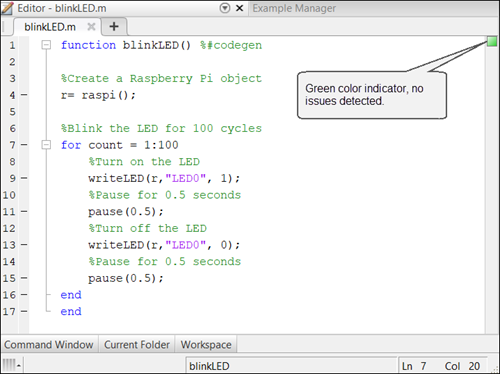
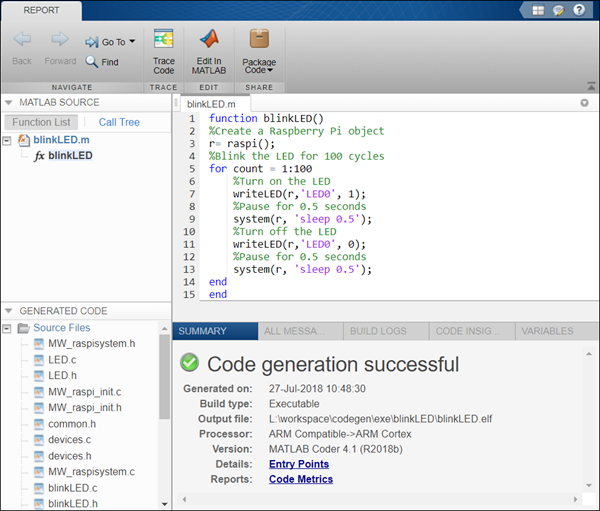

Getting Started with Deploying a MATLAB Function on the Raspberry Pi Hardware
This example shows you the how to deploy a MATLAB® function as a standalone executable on the Raspberry Pi™ Hardware using MATLAB Support Package for Raspberry Pi Hardware.
To demonstrate the steps in the workflow, this example uses a blinking LED function. In this example, you will learn how to create the blinkLED MATLAB function, prepare the function for deployment, and then deploy the function as a standalone executable on the hardware. On successful deployment, the ACT LED on the hardware starts blinking every 0.5 seconds and continues to run even after you disconnect the hardware from the computer.
Contents
- Prerequisites
- Required Products
- Step 1: Create a MATLAB Function
- Step 2: Run the MATLAB Function Using Live IO from Hardware
- Step 3: Add the Compilation Directive to the MATLAB Function
- Step 4: Check the MATLAB Function Using Code Analyzer
- Step 5: Check the MATLAB Function for Unsupported calls
- Step 6: Create a Hardware Configuration Object
- Step 7: Deploy the MATLAB Function on Hardware
Prerequisites
Before you start with this example, we recommend you to complete these examples:
Required Products
- Raspberry Pi hardware
- A power supply with at least 1A output
- MATLAB Coder license
Step 1: Create a MATLAB Function
1. Copy the blinkLED function and paste it in the MATLAB Editor. The function implements an algorithm to blink the ACT LED on the Raspberry Pi hardware every 0.5 seconds for 100 cycles.
Note: MATLAB functions with input or output arguments are not supported for deployment on the hardware.
function blinkLED()
% Create a Raspberry Pi object r= raspi();
% Blink the LED for 100 cycles
for count = 1:100
% Turn on the LED
writeLED(r,"LED0", 1);
% Pause for 0.5 seconds
pause(0.5);
% Turn off the LED
writeLED(r,"LED0", 0);
% Pause for 0.5 seconds
pause(0.5);
end
end2. Save the function as blinkLED.m to a folder to which you have write access.
Step 2: Run the MATLAB Function Using Live IO from Hardware
Before deploying the function, running the MATLAB function by using live input and output (IO) from the hardware is recommended.
Using live IO enables you to:
- Verify that the MATLAB function is communicating with the hardware as expected.
- Detect run-time errors, such as peripheral conflicts, that are much harder to diagnose during deployment.
Run the blinkLED function by using the run command in the MATLAB Command Window. When you run the blinkLED function, MATLAB connects to the hardware and starts executing the function on the hardware. The ACT LED starts blinking every 0.5 seconds.
run blinkLED
Before proceeding, fix any errors you might have detected in this step.
Step 3: Add the Compilation Directive to the MATLAB Function
Add the %#codegen directive (or pragma) after the blinkLED function signature to indicate that you intend to deploy the MATLAB function on the hardware. Adding this directive instructs the MATLAB Code Analyzer to help you diagnose and fix violations that would result in errors during deployment.
function blinkLED() %#codegen
Step 4: Check the MATLAB Function Using Code Analyzer
The Code Analyzer checks the MATLAB function for code violations at design time, minimizing compilation errors. The code analyzer continuously checks your code as you enter it. It reports problems and recommends modifications.
Check the blinkLED function for any errors and warnings by following the steps in Check Code with Code Analyzer and fix them before proceeding to the next step.
The analyzer provides an indicator in the top right of the editor window. The color of the indicator helps you identify if the function has any errors or warnings.
Color of Indicator | Description
_ _ _ _ _ _ _ _ _ _ _ _ _ _ _ _ _ _ _ _ _ _ _ _ _ _ _ _ _ _ _ _
Green | Function has no errors or warnings
Orange | Function has warnings
Red | Function has errorsIn this example, the green color of the indicator specifies that the blinkLED function has no errors or warnings.

Step 5: Check the MATLAB Function for Unsupported calls
Debug the blinkLED function and ensure if all the calls in the function are supported by code generation.
To fix the unsupported function call errors, perform one of these steps:
1. Declare the function as coder.extrinsic: When you declare a function call as an extrinsic function, the code generator does not produce code for that function. It instead dispatches them to MATLAB for execution. For more information, see Declaring MATLAB Functions as Extrinsic Functions.
2. Replace with an equivalent call supported by code generation: Replace the unsupported calls with an equivalent call that is supported by code generation. Including calls supported by code generation ensures that the function will behave the same as tested in Run the Function Using Live IO from Hardware after the deployment.
Some of the calls supported by code generation are listed here:
In this example, the pause function at line number 11 and 15 is not supported by code generation. Deploying the blinkLED function without any modification will result in an executable that may not behave exactly the same as expected.
To fix this unsupported call error, replace pause with an equivalent function supported by code generation. You can replicate the functionality of the pause function by using the system function provided by the MATLAB Support Package for Raspberry Pi Hardware. Provide the Linux® terminal command, sleep, as the input argument to the system function.
function blinkLED() %#codegen
% Create a Raspberry Pi object r= raspi();
%Blink the LED for 100 cycles
for count = 1:100
% Turn on the LED
writeLED(r,'LED0', 1);
% Pause for 0.5 seconds
system(r, 'sleep 0.5');
% Turn off the LED
writeLED(r,'LED0', 0);
% Pause for 0.5 seconds
system(r, 'sleep 0.5');
end
endStep 6: Create a Hardware Configuration Object
1. Create a hardware configuration object by using the targetHardware function in the MATLAB Command Window.
board = targetHardware('Raspberry Pi')board =
targetHardware with properties:
Name: 'Raspberry Pi'
DeviceAddress: '176.93.236.232'
Username: 'pi'
Password: '*********'
BuildDir: '/home/pi'
BuildAction: 'Build, load, and run'2. Verify the DeviceAddress, Username, and Password properties listed in the output. If required, change the value of the properties by using dot notation syntax.
For example, to change the device address to 173.21.22.327, enter:
board.DeviceAddress = '173.21.22.327'
Step 7: Deploy the MATLAB Function on Hardware
Deploy the MATLAB function as a standalone executable on the hardware by using the deploy function.
deploy(board,'blinkLED')
Code generation successful: View report
The deploy function initiates code generation of the blinkLED function. At the end of code generation, MATLAB generates a code generation report. Use this report to debug the blinkLED function for any build errors and warnings in the generated code.
After successfully generating the code, the support package loads and runs the code as a standalone executable on the hardware. The executable starts blinking the ACT LED on the hardware every 0.5 seconds. The blinking continues for 100 cycles.
